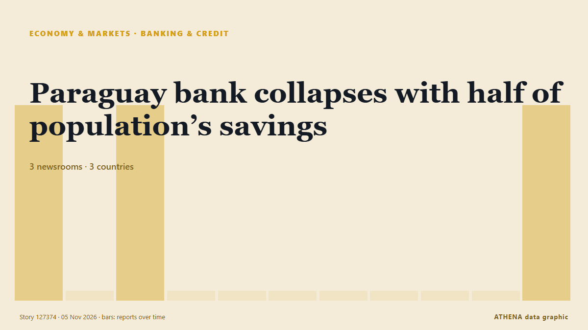

Banking & credit
SponsoredPresented by  Cybernetics and Artificial Intelligence Lab Welcome to the Cybernetics and Artificial Intelligence Laboratory, established at the Department of Business Administration of the National and Kapodistrian University of Athens. The lab is headed by Professor Dimitrios Thomakos. The lab aims to do research that can be published in top venues. Our research uses tools and methods of Artificial Intelligence, and lies in the following areas: - Forecasting - Decision making - Cyber security - Finance We are always looking forward to collaborating with exceptional students!
Cybernetics and Artificial Intelligence Lab Welcome to the Cybernetics and Artificial Intelligence Laboratory, established at the Department of Business Administration of the National and Kapodistrian University of Athens. The lab is headed by Professor Dimitrios Thomakos. The lab aims to do research that can be published in top venues. Our research uses tools and methods of Artificial Intelligence, and lies in the following areas: - Forecasting - Decision making - Cyber security - Finance We are always looking forward to collaborating with exceptional students!
| 23 Oct | 0 |
|---|---|
| 24 Oct | 0 |
| 25 Oct | 0 |
| 26 Oct | 0 |
| 27 Oct | 0 |
| 28 Oct | 0 |
| 29 Oct | 0 |
| 30 Oct | 1 |
| 31 Oct | 1 |
| 1 Nov | 3 |
| 2 Nov | 1 |
| 3 Nov | 9 |
| 4 Nov | 6 |
| 5 Nov | 3 |

Paraguay bank collapses with half of population’s savings
Protests have erupted across Paraguay after Ueno Bank was shut down in the middle of the night over a solvency crisis. from Al Jazeera English
Nigeria: Tinubu Seeks Senate Approval for $7.7bn External Loan
[Leadership] ... Akpabio Says Fresh Request Supersedes Earlier $20.3bn Proposal. from AllAfrica
World Bank: How corruption is holding back Kenya’s economic potential
Corruption is costing Kenya more than public money lost through questionable deals. from People Daily
Israel kills Palestinian in Gaza, seizes eight homes in occupied West Bank
Israeli attacks target several areas of Gaza as Palestinian authorities report new homes and more than 620 acres of land near Ramallah seizures in occupied West Bank. from TRT World
Citi employee killed in shooting at Florida office, suspect dead
A sheriff said 365 deputies had responded to the incident and that he believed it was a targeted one. from The Straits Times
Paraguay opposition seeks president’s removal over banking crisis
The Paraguayan opposition has filed a motion to remove President Santiago Pena due to his alleged ties to Ueno Bank, which was recently seized by the Central Bank, leaving millions of depositors… from Arab News
USP appoints Patricia Naisara to Executive role
The University of the South Pacific has appointed Patricia Naisara as its new Executive Director, People and Workforce Strategy. from FBC News
El Niño Is Already Cutting Costa Rica’s Coffee Harvest by Up to 15%
Coffee growers expect a 10-15% smaller harvest as El Niño hits rice, bananas, melons and cattle, and the Central Bank sees farm output shrinking in 2027. from The Tico Times
Palestinian families return home after Israeli siege of Hebron
Speaking to The New Arab, several residents said money, gold jewellery and household items, including children's toys and piggy banks, were missing. from The New Arab
Belgrade Commercial Court Opens Bankruptcy Proceedings Against Alta Banka
The Commercial Court in Belgrade opened bankruptcy proceedings against Alta Bank, appointing the Deposit Insurance Agency as the bankruptcy administra. from N1 Serbia (English)
Consortium led by Boehly preparing securities swap deal for Lukoil assets — Reuters
According to the sources, an unnamed bank acting on behalf of the consortium has purchased frozen Lukoil securities from Western investors to subsequently exchange them for the company’s foreign… from TASS (English)
Tinubu’s reforms favour rich, worsen poverty — Atedo Peterside
Atedo Peterside, founder of Stanbic IBTC Bank Plc and Anap Foundation, has said President Bola Tinubu’s economic reforms have benefited wealthy Nigerians while worsening the living conditions of… from Vanguard
Westpac NZ’s profit slips as lending grows
The bank's net interest margin fell to 2.23%, from 2.32%. from BusinessDesk
New Zealand's central bank registers Revolut as country's 27th bank
Regulatory approval means Revolut Bank NZ will be the nation's first digital bank. from BusinessDesk
Owner of Serbia's Delicenced ALTA Banka Gets Arrested
The Executive Board of the National Bank of Serbia has officially revoked the operating licence of Alta Banka a.d. from N1 Serbia (English)
FG introduces USSD code for loans covering food, solar, others
The Federal Government has launched a new USSD-based credit service, SPARK, designed to help Nigerians access loans and build formal credit histories using basic mobile phones. from Vanguard
Cracks In Turkey-Azerbaijan Ties: Israel And Aliyev’s Absence
Behind the specific disagreements, a broader geopolitical issue may be at play, as Ankara and Baku diverge on Iran, Israel and Armenia. from to vima